Table Of Contents
- 1. User Manual
1. User Manual
1.1. The Timeline
| 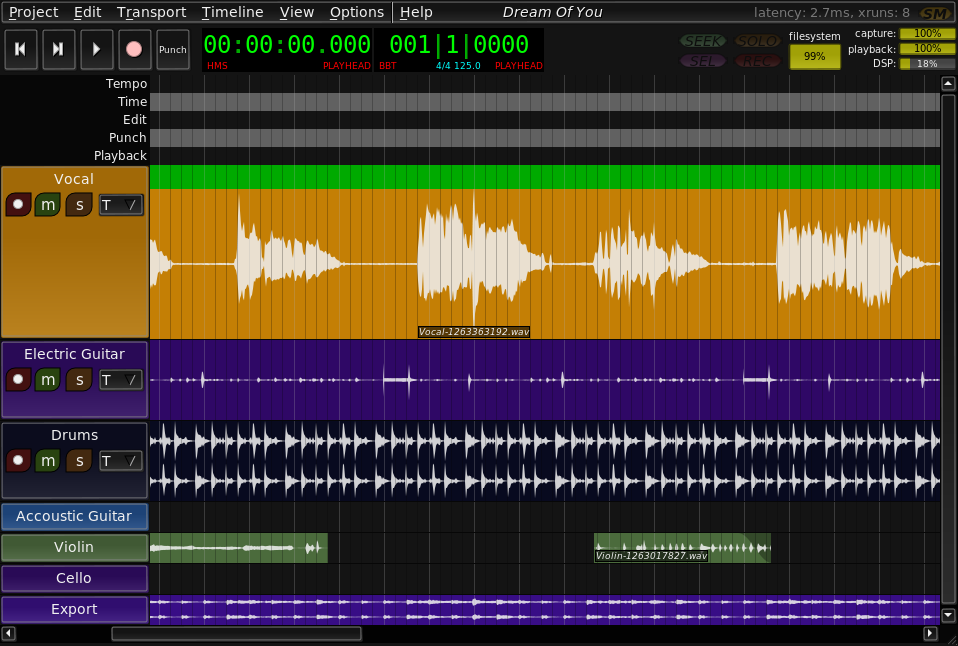 |
The Timeline is where you will add tracks, make captures, and arrange regions.
Before you can add anything to the timeline, you must create a new project (menu item Project/New)
| 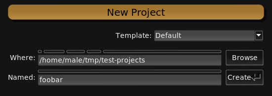 |
1.1.1. Display Options
The display options, found in the Options/Display submenu may be adjusted to suit your needs. Set the color scheme, widget style, and other graphic options to your liking. These options are global and affect all projects.
1.1.2. Navigation
1.1.2.1. Sequences
A sequence is focused when you click on it. Focus can be moved back and forth between sequences with Tab and Shift-Tab.
1.1.2.2. Playhead
Shift+Left and Shift+Right move the playhead backward and forward one beat, while Ctrl+Shift+Left and Ctrl+Shift+Right move it by bars.
1.1.2.2.1. Within A Sequence
The focused sequence accepts additional movement commands with specific relevance. Ctrl+Left moves the playhead to the beginning of the current or previous object in the sequence. Ctrl+Right moves it to the beginning of the next object in the sequence.
1.1.3. Cursors
 |
Active cursors are displayed the the cursor strip along the top of the timeline. The default cursors define regions of time. All cursors can be manipulated in their tracks by dragging with the mouse or other operations that apply to regions on the timeline.
Ctrl+RightClick will remove a cursor.
1.1.3.1. Edit Cursor
| 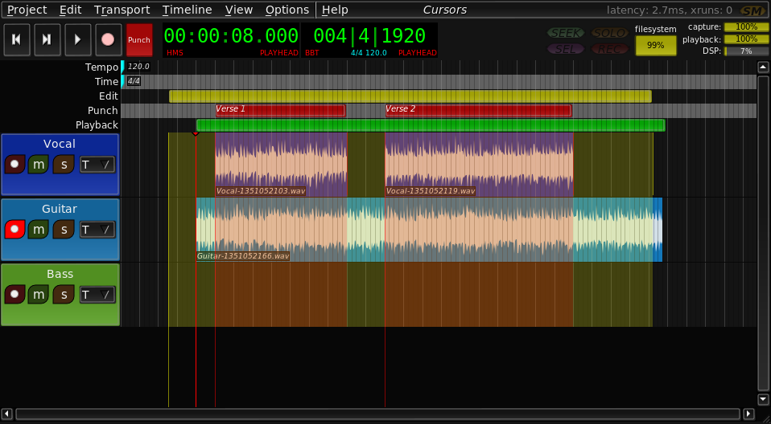 |
The edit cursor defines a region to apply an operation to. The edit cursor is also used to define the region other cursors, such as Punch and Playback, are created from.
Ctrl+[ moves the beginning of the edit cursor to the position of the playhead. Ctrl+] moves the end of the edit cursor to the position of the playhead.
The edit cursor ends can be set individually with the mouse by positioning the pointer over the desired location and pressing [ or ]. Alternatively, both may be set at once by holding the r key and left-click+dragging the selection rectangle.
1.1.3.2. Playback Cursor
Hitting Ctrl+Shift+L sets the playback cursor to the same dimensions and position as the Edit Cursor.
1.1.3.3. Punch Cursors
Punch Cursors define regions where recording will occur when recording in Punch Mode.
Hitting Ctrl+Shift+P defines a new Punch Cursor with the same dimensions and position as the Edit Cursor.
Any number of punch cursors may be defined.
1.1.4. Projects
| 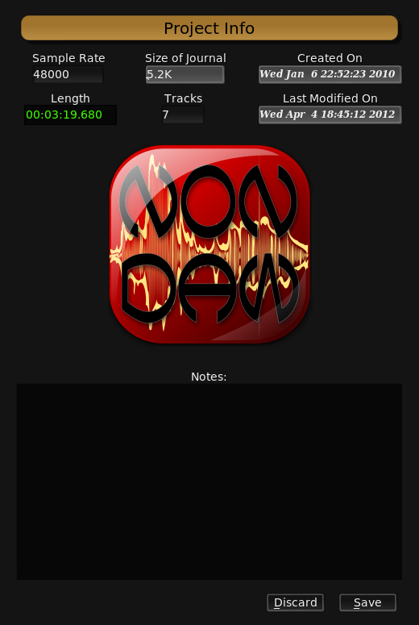 |
A Non Timeline project is a directory where Non Timeline keeps the journal, project specific settings, notes, some meta-data, and, last but not least, your audio sources. A project is completely self-contained. You can rename a project as simply as:
$ mv Project-A Project-B |
Non Timeline projects can refer to audio sources outside of the project directory--clips dropped onto the timeline from a file-manager, for instance. These are not copied into the project by default. This allows the efficient use of audio loop libraries, but introduces external dependencies. Beware that if you ever move, remove, or change one of these external sources, it will affect the Non Timeline projects referencing them.
| Note: | To import all the external sources for a project, making it suitable for distribution or archiving, use the `import-external-sources` script included with the program. |
1.1.4.1. Settings
Project specific settings are found in the Project/Settings submenu.
1.1.5. Transport
| 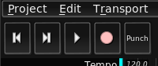 |
The transport controls allow you to control the JACK transport from the Timeline Editor. Home moves the playhead to 0 and End moves it to the end of the project. Space toggles playback.
1.1.6. Clocks
| 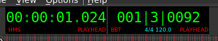 |
The clocks tell you precisely where the playhead is. There are several clock types which can be cycled through by left-clicking. The following clock types are available:
- Hours Minutes Seconds
- Timecode
- Sample
- Bar Beat Tick
1.1.7. Tempo Map
| 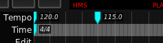 |
The tempo map serves a dual purpose. Firstly, it provides enough information about the musical structure of your project for Non Timeline to perform intelligent snapping and draw helpful measure lines. Secondly, the tempo map is communicated to other JACK clients at playback time via the JACK Timebase API, so that MIDI accompaniment can follow along to the tempo changes in your song.
Clicking on an empty part of the time or tempo sequences will prompt you for the parameters of a new time or tempo point to be inserted at that position. Hit Escape to cancel the insertion. Right-click on a time or tempo point to edit its value. Existing points can be dragged freely.
1.1.8. Tracks
| 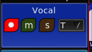 |
Add a track to the timeline by pressing the A key. Right-clicking on the track header will bring up a context menu by which you can configure the number of channels used by this track. Click on the track name to change it. The Takes menu lists all the takes associated with a track. The circular record-enable button is used to arm a track for recording. Only armed tracks will be recorded onto when the master record-enable button on the transport is activated and the transport is started. The 'm' toggle button is mute, the 's' button is solo. Multiple tracks can be soloed at once. Shift+Mousewheel will adjust the track height. Remove a track by selecting 'Remove' from its context menu.
1.1.8.1. Recording
| 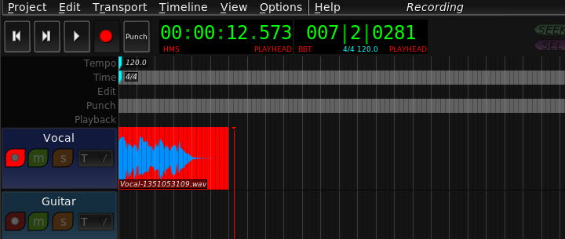 |
To initiate recording, first arm some tracks by toggling their record buttons, then toggle the global record-enable button on the transport. Recording will begin when you press play. During recording, the timeline darkens and refuses normal input. Regions being captured are colored bright red. The viewport will automatically follow the playhead as the recording progresses. Recording stops when you stop the transport or toggle the global record-button.
1.1.9. Sequences
Sequence is the generic term used to describe all distinct sequences of objects on the timeline.
1.1.10. Regions
Regions are the most common object on the timeline. Each region represents some portion of an audio source placed at some position in time. Since Non Timeline is non-destructive, regions only represent the source--altering a region does not affect the audio source in any way. Deleting a region does not delete the source--as other regions may still refer to it.
| Note: | If you decide, for whatever reason, that you no longer wish to retain unused sources, run the `remove-unused-sources` script included with the program. |
Try this one-liner to clean up many projects in parallel and reclaim disk space:
for i in ~/projects/*; do remove-unused-sources "$i" & done |
1.1.10.1. Editing
1.1.10.1.1. Split
Position the mouse pointer where you would like the region split and perform Shift+Middle-click. This will divide the region at the mouse pointer.
1.1.10.1.2. Duplicate
Drag a region (or selection) with the mousse while holding the Ctrl key to duplicate it.
1.1.10.1.3. Delete
Ctrl+Right-click removes a region or selection from the timeline.
1.1.10.1.4. Trim
Hold down Shift and click on part of a region with the left mouse button. This trims the region start to the position of the mouse pointer. Continue holding Shift and drag to continuously trim the region start point. Do the same with the right mouse button to trim the region end.
1.1.10.1.5. Pan
Hold Ctrl+Shift and drag the region. Instead of moving on the timeline, the region will remain stationary as the audio source behind it is panned forward or back. This operation is particularly useful in conjunction wiht looped regions.
1.1.10.1.6. Normalize
Hit N while a region is focused to normalize it (or Ctrl+Middle-click). Normalizing a region means automatically setting its gain as high as possible without exceeding the standard floating point audio dynamic range of +1 to -1 (corresponding to 0dBFS). Any peaks exceeding this range at this stage will appear in bright red.
1.1.10.1.7. Fade
| 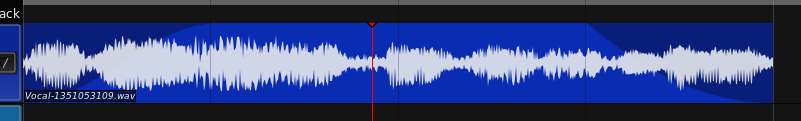 |
Each region has fade in and out curves. Position the mouse pointer over the desired fade-in end location and hit F3 to set the fade-in duration. Position the mouse pointer over the desired fade-out start location and hit F4 to set the fade-out duration. Right click on a region to bring up its context menu, then choose the type of curve for each fade. The following curves are available:
- Linear
- Sigmoid
- Logarithmic
- Parabolic
1.1.10.1.8. Loop
| 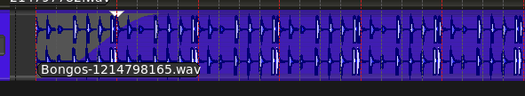 |
Instead of requiring you to duplicate a small region 100 times to achieve a looping effect, Non Timeline supports looping directly. First, adjust the region duration to cover the amount of time you would like it to loop for. Then, position the mouse pointer over the first place the loop should repeat (i.e. the first bar line after the start of the region) and hit L. This will set the loop point for this region, which will be indicated by two white arrows. At playback, the portion of the region before the loop point will loop for the duration of the region.
1.1.11. Annotation
 |
Add an annotation sequence to a track by right-clicking on the track header to bring up the context menu, and choosing Add annotation. Any number of annotation sequences may be attached to each track. Click on an empty space in the sequence to add a new annotation point. Right click on the annotation point to rename it. Hold down shift and drag with the right mouse button to create a new annotation region of a given duration. Again, right click to edit the text. Only the first line of annotation region text will be displayed on the timeline. Annotation regions are useful for containing lyrics or other cues which have a definite duration. Annotation points are more appropriately used to denote points of interest or change.
1.1.12. Automation
| 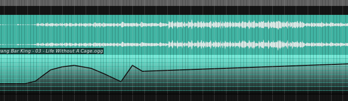 |
Each track may have any number of control sequences attached to it. A control sequence comprises a series of points in time (X axis) and intensity (Y axis). Add a control sequence to a track by picking Add control from its context menu. A control sequence may be named by right clicking on it to bring up the context menu, then picking Rename. The output of a control sequence can be set to one of two modes Control Voltage (JACK) or Control Signal (OSC).
| NOTE: Since release 1.1.0, Control Signal is now the default output mode for Control Sequences. If you have existing projects and wish to continue using Control Voltage output, you must set the mode to Control Voltage manually. |
Click anywhere on the control sequence to add a new control point. Control points can be dragged around and selected just like other objects on the timeline. They can even be part of the same selection as regions, permitting you to move regions and control points together in lock-step.
1.1.12.1. Output Mode
1.1.12.1.1. Control Voltage
Control Voltage is similar to control voltages generated by analog equipment. Setting the Control Sequence mode to Control Voltage will create a JACK output port whose contents simulate an analogue Control Voltage signal. This mode can be used to control anything that accepts CV style input. Useful targets include the Non-Mixer, and SpiralSynthModular.
1.1.12.1.2. Control Signal
The Control Signal mode uses a signal routing layer on top of the OSC protocol to intelligently and automatically discover and control any module parameter in Non-Mixer. The output of one Control Sequence may be connected to any number of Control Signal inputs available in Non-Mixer.
Control Signals are more efficient than Control Voltages when a large number of parameters are being automated.
| 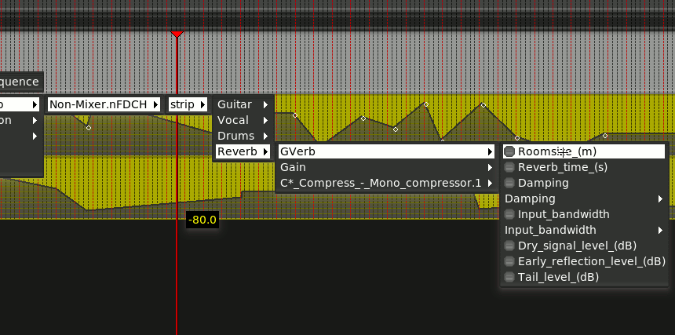 |
1.1.12.2. Interpolation Mode
| 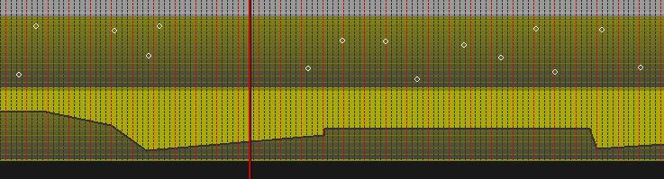 |
The interpolation mode controls how the relatively small number of Control Points is transformed into a continuously varying signal. The options are None and Linear.
When its Interpolation mode is set to None, a Control Sequence will output discrete jumps in value upon the playhead passing each Control Point. This can be useful when instantaneous changes in value are required, such as sudden muting, or changing the modes of plugins.